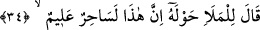
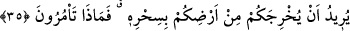
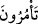
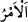
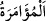
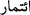

Rivâyet edilmiştir ki Fir’avn ilk mûcizeyi görünce “Başka mûcizen var mı?” diye
sordu. Mûsâ (a.s.) elini çıkardı ve “Bu nedir?” dedi. Fir’avn “Elindir. Onda ne var ki?”
dedi. Bunun üzerine Mûsâ (a.s.) elini koltuğunun altına soktu, sonra çıkardı. Eli
neredeyse gözleri alacak ve ufku kaplayacak kadar ışık saçıyordu.
et-Te’vîlâtü’n-Necmiyye’de der ki: “Elini de” yani kudret elini “(koynundan)
çıkardı; o da seyredenlere” yani Allah’ın nûruyla bakan ehl-i nazar için. Çünkü nur
nurla görünür. “bembeyaz görünen” ilâhî te’yid ile desteklenmiş, “Onun eli olurum,
Benimle tutar”[5] nûruyla nurlanmış bir şey oluvermiş!
34. Fir’avn, çevresindeki ileri gelenlere: “Bu, doğrusu çok bilgili bir sihirbaz!”
dedi.
“Fir’avn, çevresindeki ileri gelenlere:” etrafında oturmakta olan kavminin eşrâfına:
“Bu” adam, yâni Mûsâ “doğrusu çok bilgili” sihir ilminde üstün/ileri, bilgin ve usta
“bir sihirbaz!” dedi.” Fir’avn, kendi adamlarının Musa’ya iman etmelerinden korktu.
Bir hile düşündü ve “Bu, sihir sanatında mahareti olan bir sihirbazdır” dedi.
“
” bir görüş etrafında toplanan, görünüşleri göz dolduran, büyüklükleri ve
üstünlükleri insanlar üzerinde etkili olan topluluk demektir.
Sihir, gerçekliği olmayan gözde canlandırılan şeylerdir. Sihirbaz da gerçek olmayan
şeyleri hile ile var gibi gösteren ve gözlerde canlandıran kimsedir.
Bu âyetle aynı sözün sihirbazlara isnâd edildiği: “Fir’avn’un kavminden ileri
gelenler dediler ki: “Bu çok bilgili bir sihirbazdır.” (el-A’râf, 7/109) âyetinin arası
şöyle te’lif edilebilir: Fir’avn bu sözü orada hazır bulunanlara, orada bulunanlar da
bulunmayalara söylemişlerdir. Nitekim Keşfü’l-esrâr’da böyle geçmektedir.
35. Sizi sihiriyle yurdunuzdan çıkarmak istiyor. Şimdi ne buyurursunuz?
“Sizi sihiriyle yurdunuzdan” Mısır topraklarından “çıkarmak” size üstün gelmek
“istiyor. Şimdi ne buyurursunuz?” Onunla ilgili bana ne söyleyeceksiniz, açıklayın.
Keşfü’l-esrâr’da
der
ki:
“Buradaki
“
”
kelimesi
“
”den
değil
müşâvere/danışma demek olan “
”dendir. İşâret ettiği hususta bir kısmı diğerinin
emrini/görüşünü kabul ettiği için müşâvereye “
” denir. Yâni Fir’avn şöyle dedi:
“Onu uzaklaştırma ve menetme konusunda bana neyi işâret eder/tavsiye edersiniz?”
Mûcizenin kuvveti, Fir’avn’u yendi/altetti, hayret ve şaşkınlık içinde bıraktı. Öyle ki